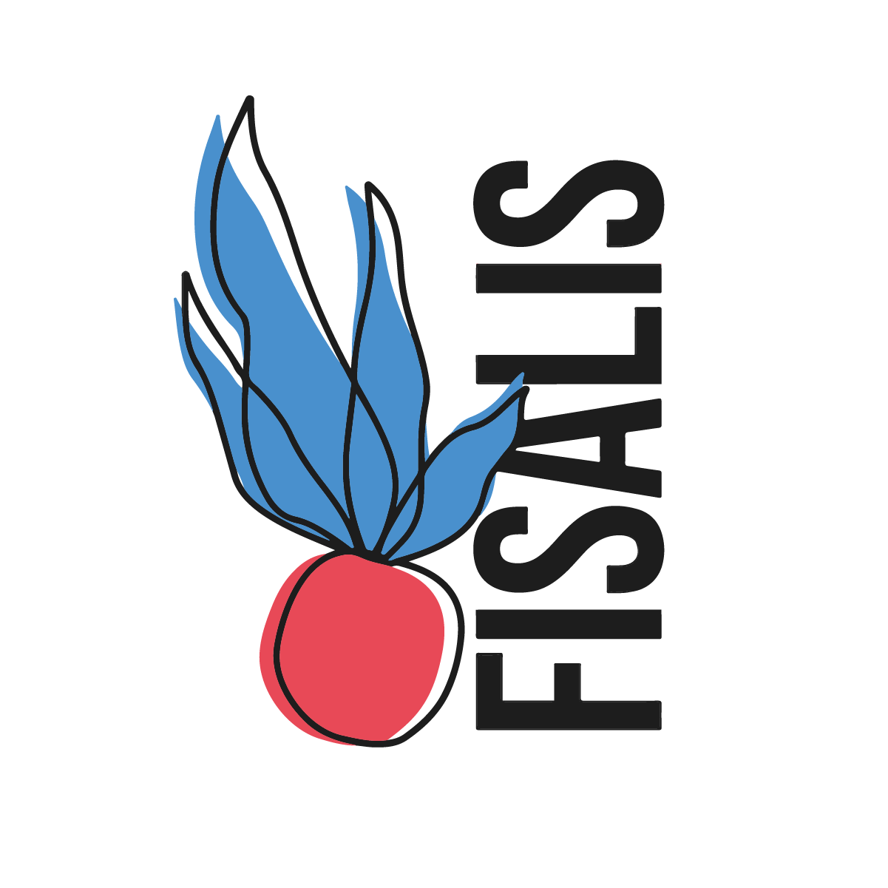
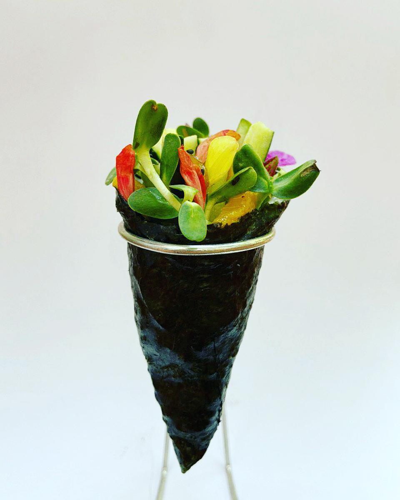
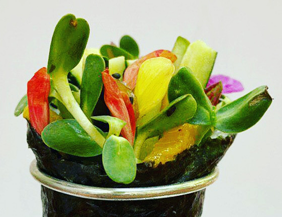
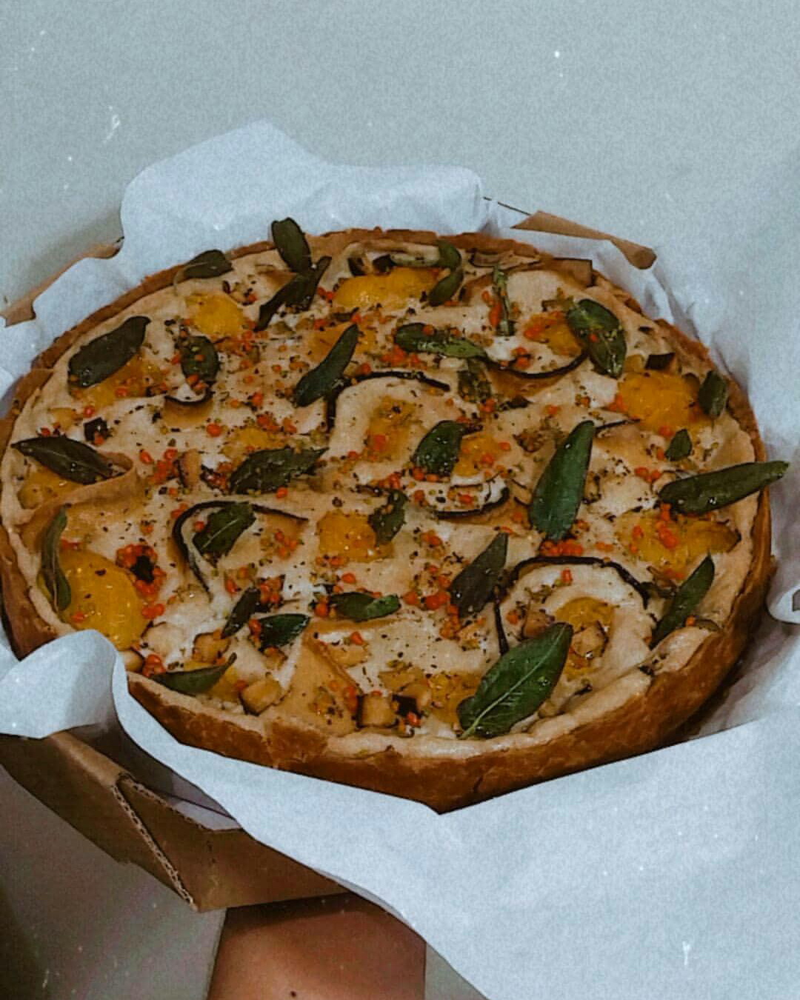

temakitemakitemakitemakitemak
makitemakitemakitemakitemakitem
akitemakitemakitemakitemakitemakite
itemakitemakitemakitemakitemakitemaki
emakitemakitemakitemakitemakitemakit
temakitemakitemakitemakitemak
makitemakitemakitemakitemakitem
akitemakitemakitemakitemakitemakite
itemakitemakitemakitemakitemakitemaki
makitemakitemakitemakitemakitem

QUI
CHE